리눅스마스터-2급 (2012-12-10 기출문제)
1과목: 리눅스 운영 및 관리
1. /ihd 디렉터리에 존재하는 shared.txt 파일에 대해 모든 사용자가 읽기만 가능하도록 설정하기 위한 명령으로 알맞은 것은?
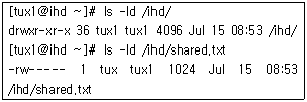
- chmod 666 /ihd/shared.txt
- chmod 111 /ihd/shared.txt
- chmod 444 /ihd/shared.txt
- chmod 555 /ihd/shared.txt
(정답률: 82%)

2. 다음과 같이 사용자 tux1, 그룹 tux1 소유인 디렉터리 /home/tux1를 포함한 하위 디렉터리, 파일의 소유그룹을 penguin로 변경하려고 한다. 알맞은 것은?
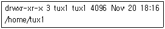
- chgrp -R penguin /home/tux1
- chown -R penguin /home/tux1
- chgrp -g penguin /home/tux1
- chown -g penguin /home/tux1
(정답률: 64%)
3. 다음 명령의 실행 결과로 ( 괄호 ) 안에 알맞은 것은?
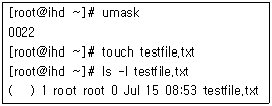
- -rwxr-xr-x
- -rwxrw-rw-
- -rw-r--r--
- -r--r--r--
(정답률: 62%)
4. 현재 ihd.txt 허가권은 666 이다. 아래의 보기와 같이 변경하려 할 때 틀린 것은?
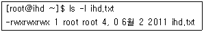
- chmod 777 ihd.txt
- chmod u=x,g=x,o=x ihd.txt
- chmod ugo+x ihd.txt
- chmod ugo=rwx ihd.txt
(정답률: 65%)
5. 리눅스 커널 2.4 버전에서는 Quota관련 설정파일이 32bit 체제로 변환되었다. quotacheck를 하기전에 생성해야 되는 파일로 알맞은 것은?
- user.quota
- user.aquota
- quota.user
- aquota.user
(정답률: 46%)
6. 다음 중 데이터의 복구확률을 높이기 위해 사용되는 저널링 파일 시스템으로 틀린 것은?
- JFS(Journaled File System)
- XFS(eXtended File System)
- ext2(Second Extended File System)
- ReiserFS(Reiser File System)
(정답률: 79%)
7. 다음 중 df 명령을 이용해 현재 마운트된 파일 시스템의 형태를 보기위해 사용하는 옵션으로 알맞은 것은?
- -a
- -T
- -P
- -i
(정답률: 65%)
8. 다음은 /dev/sda6 파티션을 ext3 파일시스템으로 생성하려고 한다. ( 괄호 )안에 들어갈 내용으로 틀린 것은?
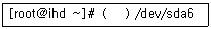
- mkfs.ext3
- mke2fs -t ext3
- mke2fs -j
- mkfs -c
(정답률: 58%)
9. 새로운 디스크를 증설하여 사용하려 할 때, 이루어지는 작업의 순서로 알맞은 것은?
- 마운트 -> 파티션 생성 -> 파일 시스템 생성
- 파일시스템 생성 -> 파티션 생성 -> 마운트
- 파티션 생성 -> 파일 시스템 생성 -> 마운트
- 파티션 생성 -> 마운트-> 파일시스템 생성
(정답률: 77%)
10. 다음 중 파일 시스템의 구성 블록(Block) 요소로 틀린 것은?
- 데이터 블록(Data Block)
- 파일 블록(File Block)
- 슈퍼블록(Super Block)
- 아이노드 블록(Inode Block)
(정답률: 53%)
11. 시스템에서 사용할 수 있는 쉘 목록이 종류가 등록되어 있는 파일로 알맞은 것은?
- /etc/shells
- /etc/bash
- /etc/password
- /etc/profile
(정답률: 82%)
12. chsh -l 명령어를 수행한 결과로 알맞은 것은?
- 사용가능한 쉘 목록을 출력한다.
- 사용자의 쉘 환경을 출력한다.
- 이전 쉘 환경을 출력한다.
- 변경된 쉘 환경을 출력한다.
(정답률: 70%)
13. Bash 쉘에서 히스토리(history) 기능 사용 중 저장 가능한 히스토리 수를 지정하는 환경변수로 알맞은 것은?
- HISTCTL
- HISTORY
- HISTSIZE
- HISCONTROL
(정답률: 85%)
14. Bash 쉘에서 이전 사용한 history 명령을 찾는 단축키로 알맞은 것은?
- <Ctrl + f>
- <Ctrl + r>
- <Ctrl + l>
- <Ctrl + a>
(정답률: 48%)
15. bash 쉘에서 사용되는 특수문자 중 백그라운드 명령 실행에 사용되는 것으로 알맞은 것은?
- &&
- &
- ||
- !
(정답률: 80%)
16. 다음은 /home 영역에 Quota를 설정하는 순서 이다. 빈칸에 들어갈 내용으로 알맞은 것은?
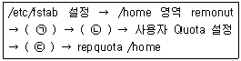
- (ㄱ) Quota 시작 - (ㄴ) Quota 파일 생성 - (ㄷ) Quota 파일로 변환
- (ㄱ) Quota 파일로 변환 - (ㄴ) Quota 파일 생성 - (ㄷ) Quota 시작
- (ㄱ) Quota 파일 생성 - (ㄴ) Quota 시작 - (ㄷ) Quota 파일로 변환
- (ㄱ) Quota 파일 생성 - (ㄴ) Quota 파일로 변환 - (ㄷ) Quota 시작
(정답률: 61%)
17. 다음 중 명령행 편집 기능을 제공하지 않는 쉘(Shell)로 알맞은 것은?
- bash
- ksh
- csh
- tcsh
(정답률: 52%)
18. Bash 쉘에서 history 사용 명령어 중에 “!3”에 대한 수행 명령으로 알맞은 것은?
- 지금으로 부터 3번째 전 history 내용을 실행
- history 내용중 3번째 해당 되는 내용을 실행
- 현재 입력된 명령어를 3번 연속 실행
- history 내용중 3번 반복된 내용을 보여줌
(정답률: 66%)
19. 다음 중 “백그라운드로 실행되면서 server의 역할을 하거나 그 기능을 도와주는 프로세스”로 정의된 daemon 프로세스가 틀린 것은?
- httpd
- systemcall
- ftpd
- inted
(정답률: 66%)
20. 다음 중 ps 명령으로 프로세스 상태를 살펴볼 때 각 필드 설명 중 알맞은 것은?
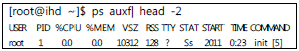
- PID : 부모프로세스 식별번호
- VSZ : 소켓 사용량
- RSS : 실제메모리 사용량
- TIME : 프로세스 생성 시간
(정답률: 59%)
21. 현재 콘솔에서 multitasking을 수행시키는 과정에 대한 설명으로 틀린 것은?
- 수행중인 foreground 프로세스를 suspend 시키려면 "CTRL-c"를 누른다.
- suspend된 프로세스를 foreground로 실행 시키려면 “fg %<작업번호>”명령을 사용한다.
- suspend된 프로세스를 background로 실행 시키려면 “bg %<작업번호>”명령을 사용한다.
- background로 실행된 프로세스의 정보는 "jobs"명령으로 확인 한다.
(정답률: 70%)
22. 다음 중 ps 명령으로 프로세스 상태를 확인할 때 아래의 설명에 해당되는 프로세스 상태로 알맞은 것은?
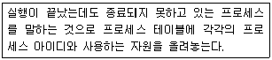
- T
- S
- W
- Z
(정답률: 79%)
23. 다음 중 아래의 설명에서 ( 괄호 )안의 ⓐ, ⓑ 순서대로 알맞은 것은?
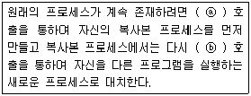
- ⓐ - exec, ⓑ - fork
- ⓐ - copy, ⓑ - exec
- ⓐ - exec, ⓑ - copy
- ⓐ - fork, ⓑ - exec
(정답률: 64%)
24. 다음 중 리눅스에서 프로세스에 시그널을 전달하여 종료시킬 때 사용되는 명령으로 알맞은 것은?
- rm
- finish
- kill
- sigsend
(정답률: 84%)
25. 다음 중 프로세스의 우선순위를 변경하는 명령어로 알맞은 것은?
- make
- chproc
- nice
- priority
(정답률: 86%)
26. 월요일부터 금요일까지 점심시간을 알려주기 위해 오전 11시 50분에 “Have a good lunch!"라는 메시지를 시스템에 접속한 사용자에게 전하려 한다. crontab 설정으로 알맞은 것은?
- 50 11 1-5 * * /usr/bin/wall "Have a good lunch!"
- 11 50 1-5 * * /usr/bin/wall "Have a good lunch!"
- 50 11 * * 1-5 /usr/bin/wall "Have a good lunch!"
- 11 50 * * 1-5 /usr/bin/wall "Have a good lunch!"
(정답률: 76%)
27. 다음 중 ps aux 명령으로 확인 할 수 있는 정보로 틀린 것은?
- 프로세스 실제메모리 사용률
- 부모 프로세스 식별번호
- 프로세스 시작시간
- 프로세스 식별번호
(정답률: 57%)
28. 프로세스 상태를 알기 위한 명령 ps의 옵션이다. 다음 중 옵션과 설명이 틀린 것은?
- f : 프로세스 간 상속관계를 트리구조로 보여준다.
- -j : 작업에 관련된 ID를 출력한다.
- n : 사용자의 정보를 ID와 숫자로 표시한다.
- e : 모든 프로세스를 나열한다.
(정답률: 47%)
29. vi 편집기에서 편집한 내용을 저장하기 위한 방법으로 틀린 것은?
- :w!
- :wq
- :w save.txt
- :q!
(정답률: 83%)
30. vi 에디터에서 편집 중인 문서의 줄 번호를 보여 주지 않게 하는 명령어로 알맞은 것은?
- :!set nu
- :set nu
- :set nonu
- :set notnu
(정답률: 80%)
31. vi 에디터에서 문서 작성 “yy” 명령어의 설명으로 알맞은 것은?
- 커서가 위치한 행 윗줄 모두 복사
- 커서가 위치한 행 아랫줄 모두 복사
- 커서가 위치한 행 복사
- 현재 작성중인 문서 모두 복사
(정답률: 82%)
32. 다음 vi 명령 중 검색 명령이 틀린 것은?
- n
- o
- ?
- /
(정답률: 67%)
33. vim에서 한글이 제대로 입력되지 않을 경우 사용하는 명령어로 알맞은 것은?
- set lang=euc-kr
- set term=euc-kr
- set fileenconding=euc-kr
- set char=euc-kr
(정답률: 40%)
34. vi 편집기에 대한 설명 중 틀린 것은?
- vi 편집기의 명령모드에서 삭제가 가능하다
- vi 편집기의 입력모드 전환은 i, o 등으로 전환 할 수 있다.
- :wq! 편집 중인 파일을 저장하고 종료한다.
- :w girl.txt 편집 중인 파일을 girl.txt로 저장하고 종료한다.
(정답률: 64%)
35. apt-get 명령 사용 설명으로 틀린 것은?
- apt-get install : 패키지 설치시 사용한다.
- apt-get remove : 패키지 삭제시 사용한다.
- apt-get update : 패키지 업그레이드시 사용한다.
- apt-get clean : 로컬 저장소의 모든 .deb 패키지를 삭제한다.
(정답률: 37%)
36. 다음 중 압축 기능으로 틀린 것은?
- tar
- bzip2
- gzip
- zip
(정답률: 65%)
37. rpm 옵션 중 패키지의 간략한 정보와 설치 된 파일을 출력하는 질의 옵션으로 알맞은 것은?
- rpm –U
- rpm -ql
- rpm –e
- rpm -i
(정답률: 69%)
38. 파일을 압축하는 이유로 틀린 것은?
- 파일관리의 편리성
- 저장 공간의 절약
- 다운로드 시간 감소
- 파일 자동 삭제의 편리성
(정답률: 80%)
39. Redhat 계열 배포판의 패키지 관리 도구로 리눅스의 소프트웨어 설치와 제거, 업그레이드 등이 편리한 환경을 지원하는 유틸리티로 알맞은 것은?
- deb
- rpm
- tar
- zip
(정답률: 87%)
40. 대부분의 Linux 버전(GNU tar)에서는 tar파일을 추출하면서 동시에 압축 해제를 할 수 있다. tar 명령에 추가할 플래그로 알맞은 것은?
- k 플래그
- z 플래그
- t 플래그
- L 플래그
(정답률: 58%)
41. 다음 rpm 파일에서 패키지의 버전으로 알맞은 것은?
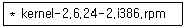
- kernel
- 2.6.24
- 2.i386
- i386
(정답률: 84%)
42. gzip으로 압축된 파일을 사용하는 것으로서 압축되어 있는 텍스트 파일의 압축을 풀지 않은 상태에서 내용만 볼 때 사용 가능한 명령어로 알맞은 것은?
- zcat
- cat
- less
- grep
(정답률: 79%)
43. 다음 중 윈도우NT 시스템과 프린터를 공유 할 때 리눅스에서 설정 가능한 프린터 유형으로 알맞은 것은?
- Local
- Unix Printer
- JetDirect
- Samba Printer
(정답률: 83%)
44. 다음 중 리눅스에서 사운드 카드를 설정하는 방법으로 틀린 것은?
- ALSA 설치
- 커널 컴파일
- OSS 설치
- CUPS 설치
(정답률: 63%)
45. 다음 중 장치설정에 대한 설명으로 틀린 것은?
- 리눅스에서 조이스틱 장치는 병렬포트, 시리얼 포트 등을 통해 지원된다.
- 모든 장치 드라이버는 소스코드가 공개되어 있다.
- TCP/IP의 특정 포트를 통해 프린터를 사용 할 수 있다.
- IBM PC용 사운드 카드를 지원한다.
(정답률: 55%)
46. 다음 중 Audio CD로부터 디지털 오디오 파일을 추출할 때 사용되는 프로그램으로 알맞은 것은?
- cdparanoia
- lpc
- xplaycd
- cdplay
(정답률: 73%)
47. 다음 중 리눅스의 장치 관련 설명으로 틀린 것은?
- /dev/sdc6은 세 번째 SCSI 디스크의 여섯 번째 파티션을 의미한다.
- /dev/lp0을 사용하여 텍스트 파일 문서 출력이 가능하다.
- /dev/fd는 스캐너 장치를 사용할 때 이용된다.
- 리눅스는 원격 프린터를 지원한다.
(정답률: 60%)
48. 리눅스 프린터 설치 과정이다. 다음 중 설치 순서로 알맞은 것은?
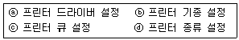
- ⓐ-ⓑ-ⓒ-ⓓ
- ⓑ-ⓐ-ⓓ-ⓒ
- ⓐ-ⓓ-ⓒ-ⓑ
- ⓓ-ⓒ-ⓑ-ⓐ
(정답률: 56%)
2과목: 리눅스 활용
49. 다음 중 ( 괄호 )안에 들어갈 내용으로 알맞은 것은?
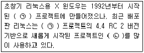
- (ㄱ) XFree86 - (ㄴ) Xorg
- (ㄱ) Xorg - (ㄴ) XFree86
- (ㄱ) KDE - (ㄴ) GNOME
- (ㄱ) GNOME - (ㄴ) KDE
(정답률: 43%)
50. X 윈도우로 부팅하기 위한 런 레벨(Run Level)로 알맞은 것은?
- 1
- 2
- 3
- 5
(정답률: 74%)
51. 다음 중 ( 괄호 )안에 들어갈 내용으로 알맞은 것은?
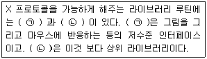
- (ㄱ) Xlib - (ㄴ) X toolkit
- (ㄱ) X toolkit - (ㄴ) Xlib
- (ㄱ) GTK - (ㄴ) Qt
- (ㄱ) Qt - (ㄴ) GTK
(정답률: 61%)
52. 다음 중 X 서버의 윈도우 및 글꼴 속성을 출력 해주는 도구로 알맞은 것은?
- xprop
- xvinfo
- xev
- xwininfo
(정답률: 33%)
53. 다음에 나열된 리눅스 멀티미디어 관련 프로그램 중 나머지 3개와 성격이 틀린 것은?
- Mplayer
- MpegTV
- xv
- Real Player
(정답률: 64%)
54. 다음 중 KDE와 가장 관련이 깊은 라이브러리로 알맞은 것은?
- Qt
- Motif
- Xaw
- GTK+
(정답률: 71%)
55. 다음에서 설명하는 것으로 알맞은 것은?
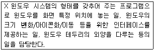
- KDE
- 디스플레이 매니저
- GNOME
- 윈도우 매니저
(정답률: 60%)
56. 다음에서 설명하는 것으로 알맞은 것은?
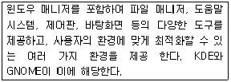
- 디스플레이 매니저
- 데스크톱
- 윈리스트
- 윈도우 메이커
(정답률: 57%)
57. 다음 설명의 LAN 토폴로지로 알맞은 것은?
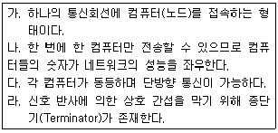
- 스타 토폴로지
- 버스 토폴로지
- 링 토폴로지
- 망(Mesh) 토폴로지
(정답률: 71%)
58. 다음 설명의 통신망 구조로 알맞은 것은?
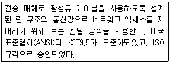
- CSMA
- IPX
- FDDI
- NetBEUI
(정답률: 64%)
59. 다음 패킷 교환 방식에 대한 설명으로 틀린 것은?
- 모든 데이터는 패킷 단위로 전송되는데, 각 패킷마다 오버헤드 비트가 존재한다.
- 호출된 지국에 전달되지 않으면 송신자에게 통지된다.
- 송신측과 수신측 사이에 고정적으로 할당되는 물리적 연결이 존재한다.
- 네트워크 자원을 패킷 단위로 나누어 시간을 공유하므로 회선 효율성이 높다.
(정답률: 62%)
60. 다음 중 IEEE(Institute of Electrical and Electronics Engineers)에서 담당하는 업무로 알맞은 것은?
- 전기 전송 표준
- LAN의 접속규격과 처리에 대한 표준
- OSI 프로토콜
- IP와 도메인
(정답률: 60%)
61. 다음에 설명하는 통신장비로 알맞은 것은?
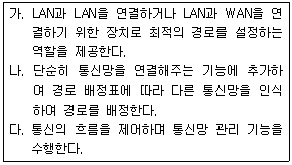
- 라우터
- 리피터
- 브리지
- 게이트웨이
(정답률: 71%)
62. 다음 중 OSI의 네트워크 계층과 연관된 프로토콜로 알맞은 것은?
- TELNET
- TCP
- ICMP
- FDDI
(정답률: 58%)
63. 다음 중 UDP 프로토콜과 가장 관련 있는 서비스로 알맞은 것은?
- FTP
- SMTP
- TELNET
- DNS
(정답률: 46%)
64. 다음 중 서비스 이름과 포트번호의 연결이 알맞은 것은?
- ftp : 23
- smtp : 25
- telnet : 22
- dns : 52
(정답률: 72%)
65. 다음 중 B 클래스 네트워크의 기본 서브넷 마스크 값으로 알맞은 것은?
- 255.0.0.0
- 255.255.0.0
- 255.255.255.0
- 255.255.255.128
(정답률: 84%)
66. 다음 중 우리나라에서 사용하는 2단계 공공 도메인에 대한 설명으로 틀린 것은?
- go – 정부 기관
- or – 네트워크 기관
- re – 연구 기관
- mil – 국방 조직
(정답률: 69%)
67. FTP를 이용하여 파일 송수신할 때 전송상태를 ‘#’ 마크로 출력하여 확인하려고 한다. 다음 중 명령어로 알맞은 것은?
- as
- bi
- list
- hash
(정답률: 78%)
68. 다음 인터넷 서비스에 대한 설명으로 알맞은 것은?
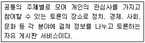
- IRC
- 유즈넷
- 인터넷폰
- 머드(MUD)
(정답률: 60%)
69. 최근 보안상의 이유로 텔넷 대신에 많이 사용하는 서비스로 알맞은 것은?
- EPIC
- XChat
- SSH
- BitchX
(정답률: 84%)
70. 다음 중 모뎀과 전화선을 이용하여 인터넷을 이용할 경우 가장 관련 있는 프로토콜로 알맞은 것은?
- PPP
- DHCP
- ICMP
- POP3
(정답률: 59%)
71. 리눅스 인터페이스 중 loopback interface에 사용하는 IP 주소로 알맞은 것은?
- 10.0.0.1
- 10.10.10.1
- 127.0.0.1
- 128.10.10.1
(정답률: 81%)
72. 다음 중 GUI 기반의 ftp 클라이언트 프로그램으로 알맞은 것은?
- gFTP
- cftp
- ncftp
- lftp
(정답률: 75%)
73. 다음은 네트워크 주소를 설정하는 내용이다. ( 괄호 )안에 들어갈 내용으로 알맞은 것은?
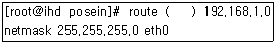
- add net
- add -net
- add default gw
- add default -gw
(정답률: 35%)
74. 네트워크의 연결 상태, 네트워크 인터페이스 상태, 라우팅 테이블 등을 확인할 때 사용하는 명령어로 알맞은 것은?
- ifconfig
- netstat
- nslookup
- ping
(정답률: 58%)
75. 다음 중 설정되어 있는 DNS 서버 주소를 변경하려고 할 때 수정해야 될 파일로 알맞은 것은?(오류 신고가 접수된 문제입니다. 반드시 정답과 해설을 확인하시기 바랍니다.)
- /etc/hosts
- /etc/resolv.conf
- /etc/host.conf
- /etc/dns.conf
(정답률: 73%)
76. 레드햇 계열의 리눅스 시스템에서 부팅시 할당되는 게이트웨이 주소를 확인할 수 있는 파일로 알맞은 것은?
- /etc/network
- /etc/networks
- /etc/sysconfig/network
- /etc/sysconfig/networks
(정답률: 54%)
77. 다음 중 ( 괄호 )안에 들어갈 내용으로 알맞은 것은?
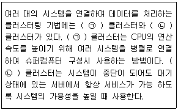
- (ㄱ) Beowulf - (ㄴ) HA(High Availability)
- (ㄱ) HA(High Availability) - (ㄴ) Beowulf
- (ㄱ) RAID - (ㄴ) LVM
- (ㄱ) LVM - (ㄴ) RAID
(정답률: 56%)
78. 다음 중 리눅스 기반 오픈소스 서버 가상화 기술이 틀린 것은?
- Xen
- KVM
- JBoss
- VirtualBox
(정답률: 61%)
79. 다음에서 설명하는 것으로 알맞은 것은?
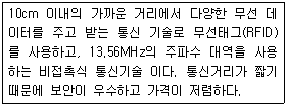
- Wi-Fi(Wireless-Fidelity)
- LTE(Long Term Evolution)
- NFC(Near Field Communication)
- BLUETOOTH
(정답률: 49%)
80. 다음 중 리눅스 기반 임베디드(Embedded) 시스템에 대한 설명으로 틀린 것은?
- open source, open architecture이다.
- POSIX를 지원하지 않고, 소규모 모듈단위로 설계되어 있다.
- 리얼 타임(Real Time) 운영을 지원한다.
- 다양한 하드웨어 구조에 이식될 수 있다.
(정답률: 65%)
설명:
- chmod: 파일 권한을 변경하는 명령어
- 444: 4는 읽기 권한을 나타내는 숫자이며, 4가 3번 반복되어 있으므로 모든 사용자에게 읽기 권한을 부여함을 의미함.
- /ihd/shared.txt: 권한을 변경할 파일 경로
따라서, "chmod 444 /ihd/shared.txt" 명령어는 /ihd 디렉터리에 존재하는 shared.txt 파일에 대해 모든 사용자가 읽기만 가능하도록 설정하는 명령어이다.